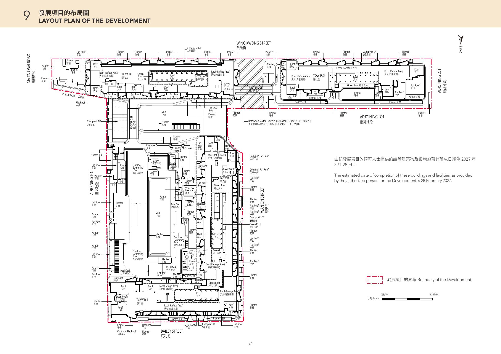
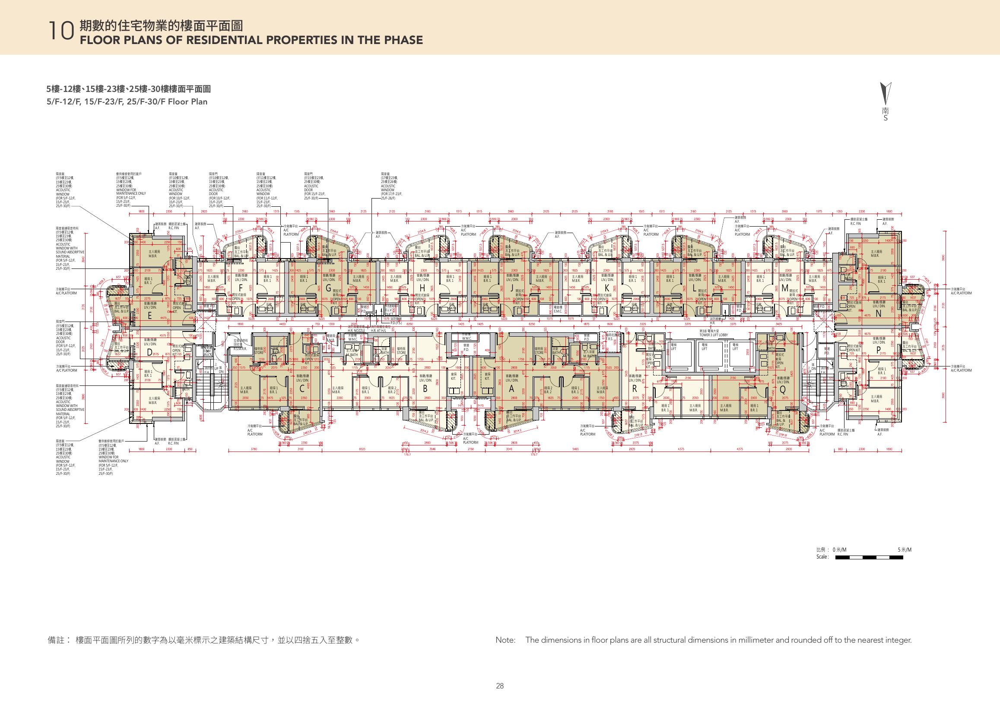
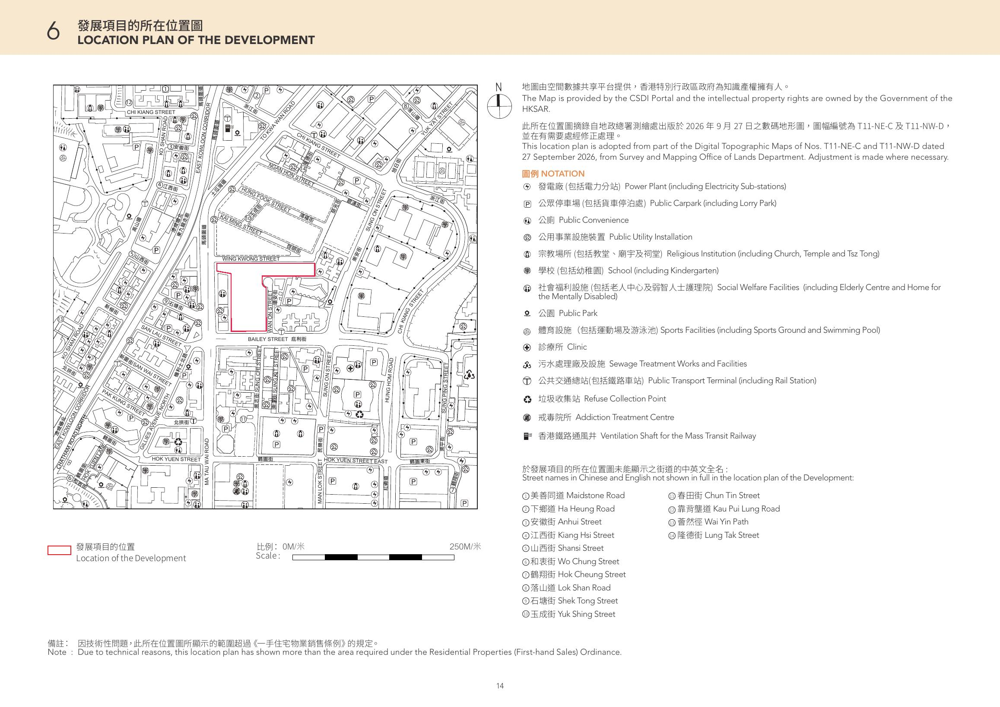
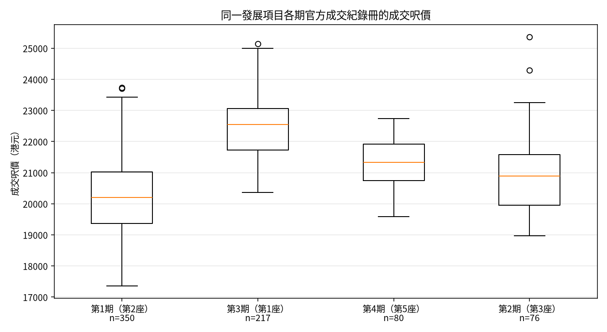
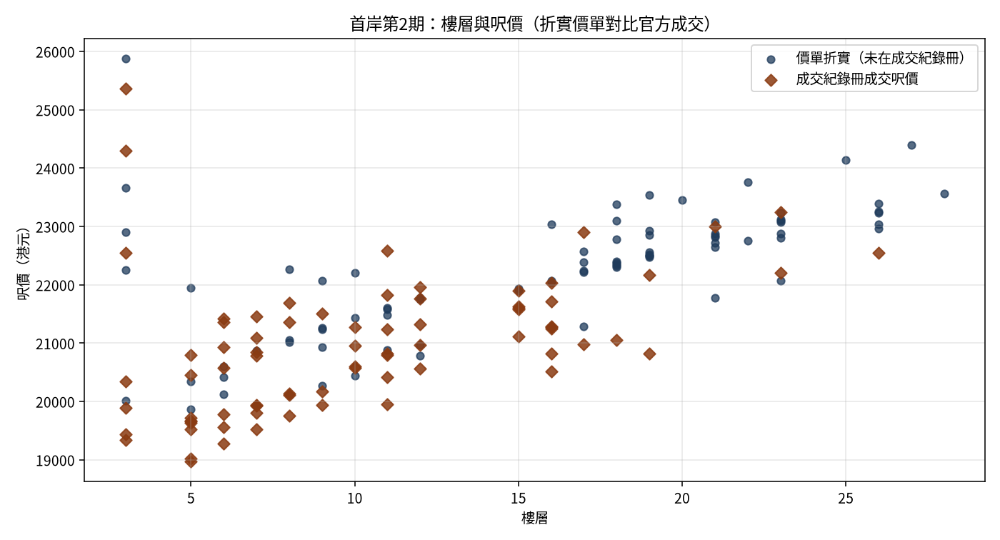
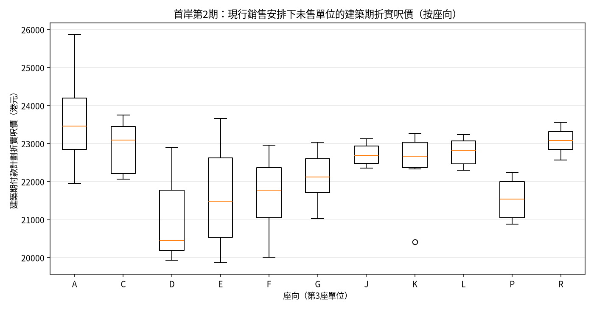
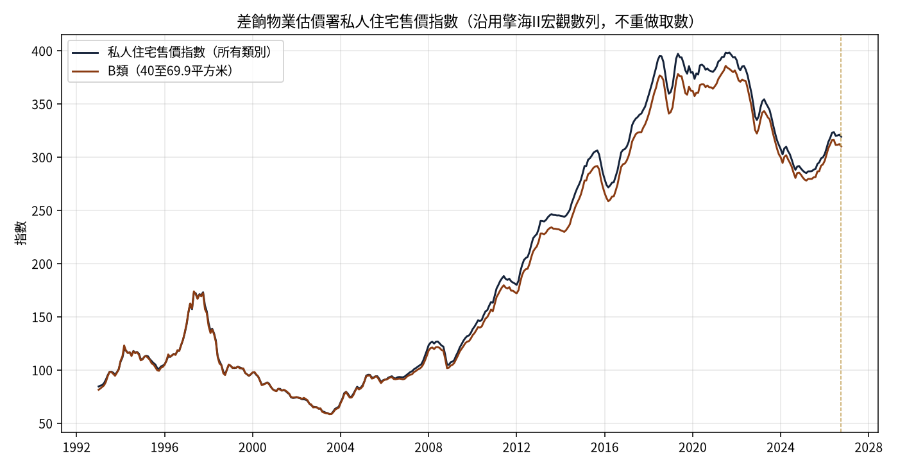
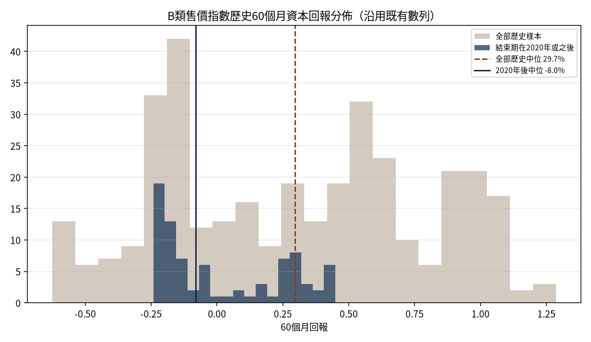

私人住宅投資備忘錄（第一版生產稿） · 並非要約或招攬
以賣方指定網站及官方價單、銷售安排、成交紀錄冊及售樓說明書為準，評估目前第一手貨源中的最高勝算組合。全港宏觀、稅務及按揭背景沿用擎海II備忘錄取數（2026年11月27日），不重做宏觀蒐集。
有條件買入一伙；若不能選中下列短名單，則改為觀望。
信念程度：中低至中。並非高勝算、深折讓的「必買」布局，而是在官方最少折扣付款約束下，挑選價格尚未明顯偏離本項目已錄成交、同時避開最差樓層與馬頭圍道夾角的緊湊兩房。
在官方價單第1A號及第2號（2026年11月9日）、現行銷售安排第1及第2號，以及第2期成交紀錄冊（文件日期2026年11月26日）所界定的未售貨源中，符合「兩房、建築期付款折實總價不逾810萬港元」的單位共50伙。本批第3座並非臨海樓座，典型單位沒有可稱為維港海景的依據；南向望向本項目第1、第2座內園，北向望向榮光街及市建局「九龍城行動區1」工地。投資論據主要是市區更新地段、與已錄第一期成交的呎價差距，以及五年內東維港灣區規劃的選擇權，而不是景觀溢價。
單一最高勝算組合：第3座15樓F室（T3-15F）。實用面積340平方呎（兩房、開放式廚房，北向榮光街），價單售價7,933,000港元；在最新價單的建築期付款計劃（計劃折扣2%，另加四項各1%的額外折扣，合共6%，向下調整至百位數）下，折實樓價7,457,000港元（約956,026美元），折實呎價21,932港元。此價較第2期成交紀錄冊中位呎價20,885港元高出約5.0%，較第1期中位呎價20,199港元高出約8.6%，屬可接受但並不便宜的溢價，用來換取離開最低數層、並避開馬頭圍道夾角。若15樓F室已售，次選為同座同向的16樓F室或15樓G室；若投資者更重視較大面積與較低呎價、並能接受西南向馬頭圍道及內園，則10樓D室（395平方呎，折實8,074,600港元、呎價20,442港元）為價值替代。
第2期目前官方清單中沒有一房單位，因此不存在「更明顯佔優的一房替代」。第4期部分未售單位在紙面呎價並不優勝，且該期已於2026年10月12日起暫停按2026年9月2日銷售安排出售，不納入現行可買貨源。
本備忘錄嚴格按照2026年11月28日鎖定的框架撰寫：只買一伙；只考慮發展商公布的官方價單及官方成交紀錄冊／銷售安排（不以第三方餘貨頁作為貨源宇宙）；純投資，約五年退出，並納入紅磡、土瓜灣及東維港灣區的區域上升潛力；兩房折實總價上限為810萬港元，較便宜的一房只在明顯更佔優時才推薦；付款基準為官方計劃折扣最少的辦法（用戶所稱「交樓付款」）。全港宏觀沿用擎海II研究，不重做取數。匯率按聯繫匯率1美元＝7.80港元陳述，不計外匯風險及兌換差價。
第2期最新價單（第1A號及第2號，印製日期2026年11月9日）列明三種付款辦法：
| 代號 | 官方名稱 | 計劃折扣 | 餘款時間 |
|---|---|---|---|
| (A) | 100天付款計劃 | 減5%（即售價之95%） | 簽署臨時買賣合約後100天內支付樓價90% |
| (B) | 180天付款計劃 | 減4%（即售價之96%） | 簽署臨時買賣合約後180天內支付樓價90% |
| (C) | 建築期付款計劃（Stage Payment Method） | 減2%（即售價之98%），計劃折扣最少 | 樓價90%於賣方書面通知有能力將物業有效轉讓予買方之日起14天內支付 |
官方文件並無「交樓付款」字樣。建築期計劃的90%餘款與交樓／轉讓通知掛鈎，即市場慣稱的交樓付款。本備忘錄以該計劃為建議基準，與擎海II「取官方計劃折扣最少者」的方法相同，並不分析較深折扣的100天或180天計劃。
在計劃折扣以外，價單列明買方可獲四項各額外1%的售價折扣：「恒地會折扣」、「連接金融核心區折扣」、「東維港灣區折扣」及「著名校網折扣」。文件以「買方可獲」陳述，並無在價單正文中附加須另行申請的額外門檻；本備忘錄因此將其視為可疊加的額外折扣，合共4%。建築期計劃下總折讓為6%。價單註明：按售價扣除相關折扣後，向下調整至百位數作為樓價（與部分其他項目「向上調整至百位數」的規則不同）。
較早的價單第1號（2026年10月7日）建築期計劃僅減1%，270天計劃減3%。第1A號已修訂為與第2號相同的2%／4%／5%結構。現行未售單位一律按所屬最新價單（第1A號或第2號）的6%總折讓計算。成交紀錄冊中部分已售單位是在舊條款或100天／270天計劃下成交，其成交價不可直接當成今日建築期淨價。
臨時訂金為樓價5%，其中100,000港元須以銀行本票支付，抬頭為「的近律師行」。其後60天內再付5%；建築期計劃下餘下90%於轉讓通知後14天內支付。從價印花稅及其他印花稅由買方支付。額外印花稅及買家印花稅自2024年2月28日起不適用（沿用稅務局規則，與擎海II備忘錄相同）。
第2期共384伙，截至取數時官方價單共列出160個不重複單位（價單第1／1A號80伙，第2號另80伙）。銷售安排第1號（2026年10月7日發出，由10月12日起先到先得）及第2號（2026年11月9日發出，由11月13日起先到先得）各提供80伙，與上述價單對應。成交紀錄冊（2026年11月26日）錄得76宗有效成交（解析後為76個不重複單位，未見標示已終止的合約）。因此，在現行兩份銷售安排下仍標示為未售的單位為84伙，其中兩房且建築期折實不逾810萬港元者50伙。
呎價最低的未售單位是5樓E室（折實7,747,400港元，呎價19,865港元）及7樓D室（7,873,400港元，19,933港元），其次是3樓F室（6,804,600港元，20,014港元）。這些單位的帳面邊緣較深，但分別面對三項明確減分：樓層過低、馬頭圍道夾角（E、D）的交通噪音，以及3樓單位在售樓說明書「有關資料」中另有圍牆立面圖，景觀更受限制。對五年退出的投資者而言，這些缺點在轉售及出租時的流動性折讓，很可能吃掉今日的呎價優勢。
15樓F室位於略過13、14樓空號之後的第一個完整中層帶，北向榮光街，不直接貼近馬頭圍道轉角；面積340平方呎，屬本座大量出現的緊湊兩房（與G、J、K、L室的339平方呎同一量級）。F座整條幾乎仍未售，選擇彈性較高。付出的代價是呎價較本批已錄成交中位高出約5%，總價仍低於810萬上限約64萬港元，亦低於第2期未售單位折實中位7,836,250港元。
| 單位 | 角色 | 實用面積 | 座向 | 價單售價 | 折實樓價 | 折實呎價 | 價單 |
|---|---|---|---|---|---|---|---|
| 15F | 首選 | 340呎 | 北（榮光街／內陸） | 7,933,000 | 7,457,000 | 21,932 | 第2號 |
| 16F | 次選（同向升高一層） | 340呎 | 北 | 7,982,000 | 7,503,000 | 22,068 | 第2號 |
| 15G | 次選（同層鄰座） | 339呎 | 北 | 7,900,000 | 7,426,000 | 21,906 | 第2號 |
| 12F | 較低樓層、較低呎價 | 340呎 | 北 | 7,877,000 | 7,404,300 | 21,777 | 第2號 |
| 10F | 再降樓層換呎價 | 340呎 | 北 | 7,753,000 | 7,287,800 | 21,435 | 第2號 |
| 10D | 較大面積、較低呎價替代 | 395呎 | 西南（馬頭圍道及內園） | 8,590,000 | 8,074,600 | 20,442 | 第2號 |
上表「價單售價」取自官方價單第2號（10D、F、G）或第1A號（如適用）。折實＝售價×（1−6%），向下調整至百位數。若到售樓處時短名單已售，不建議改以26樓或以上、折實呎價逾23,000港元的剩餘緊湊兩房追入，因其較第2期成交中位的溢價已超過約10%。
官方布局圖顯示，第3座（第2期）位於地段西北，北臨榮光街，西近馬頭圍道；第5座（第4期）在其東面、同樣沿榮光街；第2座（第1期）偏東南、近環安街；第1座（第3期）在地段南面、臨庇利街。認可人士就發展項目建築物及設施提供的預計落成日期為2027年2月28日，四期售樓說明書的預計關鍵日期則同為2027年8月31日（可因買賣合約允許的延期而延長）。因此，鄰座應視為入伙時已經存在，而不是五年後才出現的「未來檔景」。


按上述官方典型平面及北向箭嘴：F、G、H、J、K、L、M室主要朝北，望榮光街及地段以北的市建局相關工地，並非海景；E室為西北夾角（馬頭圍道及榮光街）；N室為東北夾角。南向單位望內園及第1、第2座方向；D室為西南夾角（馬頭圍道及內園），P室為東南夾角。本項目地段並不直接臨海，東面隔着其他地段及街道才是海心公園及九龍灣水域，位置圖可以印證。

售樓說明書「有關資料」要求準買家參閱2025年7月環境噪音影響評估報告（編號22463-N3）。期數提供隔音窗（擋板式，或連吸音物料）、隔音門及僅供維修的固定玻璃窗；開啟隔音窗／門時單位可能受噪音影響，關閉則可能影響景觀及通風。平面圖在5至12樓、15至23樓、25至30樓多個位置標示隔音裝置，顯示噪音緩減並非只限極低層。部分室外冷氣機置於連露台或工作平台的冷氣機平台，可能產生熱氣及噪音。
發展項目以北、榮光街對面的建築工地將由市建局及／或其合資夥伴開發；售樓說明書稱，擬議發展或會以行人天橋連接至本項目供公眾使用，但並無確定完工日期，亦可能最終不會興建。相關工程可能在景觀、噪音、塵埃或其他環境方面，對享用住宅物業造成重大影響。同章亦列出附近「九龍城行動區1」（KCAA1）地段：九龍內地段第11275號的KC-011及DL-8、第11276號的KC-010、第11277號的KC-012及KC-013、第11285號的KC-014，以及相鄰工地的KC-016，工程同樣可能影響景觀與環境。附近公共道路亦有已刊憲的改路工程。
以首選T3-15F為例：折實樓價7,457,000港元。按2026年2月26日起適用的住宅從價印花稅稅階（與擎海II備忘錄同一套官方稅階），樓價介乎664.286萬至900萬港元的稅率為3%，印花稅223,710港元。額外印花稅及買家印花稅不適用。若按金管局自2024年10月16日起私人住宅普遍最高七成按揭成數（沿用擎海II引用的金管局措施），三成首期為2,237,100港元，連同從價印花稅的現金需求約2,460,810港元，另加律師費、登記費及公契費用分攤。建築期計劃下，簽署臨時合約時先付5%（372,850港元），60天內再付5%，其餘90%（6,711,300港元）在轉讓通知後14天內支付；若同時取得七成按揭（5,219,900港元），成交時仍須備妥按揭以外的餘額及稅費。
入伙前（預計關鍵日期2027年8月31日，距今約九個月，且可延期）沒有租金。入伙後若出租，全港私人住宅租金收益率代理在沿用的宏觀數列中，2026年9月約為3.1%（所有類別）及3.5%（住宅代理數列）；這是城市水平，不是本項目的已簽租約，實際成交租金須另行驗證，本備忘錄不以之為保證收益率。住客會所位於2樓，有蓋面積僅247.087平方米（約2,660平方呎），並註明供第1至第4期全體住客使用；以全盤1,296伙計，會所規模偏小，不構成溢價理由。管理費並未在已摘錄的售樓說明書章節中以每呎或每伙金額列明，買方須向售樓處索取最新管理費預算，本備忘錄不臆造。
| 期數 | 座數 | 住宅伙數 | 最新相關價單 | 成交紀錄冊日期 | 已匹配的有效成交* | 中位成交價 | 中位成交呎價 |
|---|---|---|---|---|---|---|---|
| 第1期 | 第2座 | 360 | 第1A號（2026年8月7日）等 | 2026年11月23日 | 350宗（冊內共358個不重複單位） | 7,491,600 | 20,199 |
| 第2期（本批） | 第3座 | 384 | 第1A及第2號（2026年11月9日） | 2026年11月26日 | 76宗 | 7,920,600 | 20,885 |
| 第3期 | 第1座 | 288 | 第4B及第3B號（2026年11月12日） | 2026年10月12日（較舊） | 217宗已配對價單（冊內247個單位） | 8,419,300 | 22,544 |
| 第4期 | 第5座 | 264 | 第4號（2026年9月1日） | 2026年11月11日 | 80宗已配對價單（冊內136個單位） | 7,307,600 | 21,326 |
*「已匹配」指能夠對上本研究所下載最新價單、從而計算成交呎價的單位。成交紀錄冊的單位總數可能多於已匹配數，因為部分單位不一定出現在本研究所保存的那幾份價單中。第3期紀錄冊日期明顯早於其最新價單，後期成交可能尚未反映，該期「未售」數字不可視為最新存貨。



法律上的賣方為市區重建局（作為擁有人）及永利星發展有限公司（作為「如此聘用的人」，統籌設計、建造及銷售）。售樓說明書寫明二者的控權公司「不適用」。賣方指定網站展示恒基、希慎、帝國集團及市建局標誌，但本備忘錄不以網站標誌臆測股權比例。認可人士為梁傑文先生，呂元祥建築師事務所（香港）有限公司；承建商為中國海外房屋工程有限公司。代表擁有人的律師行為的近律師行及胡關李羅律師行。建造融資機構包括星展銀行（香港）、中國銀行（香港）及DBS Bank Ltd., Hong Kong Branch。
地段為九龍內地段第11279號，根據政府批地條件第20389號（經2025年7月7日修訂書更改，土地註冊處備忘錄編號25071400690023）持有，年期50年，由2021年12月3日起計。亦即在預計入伙時剩餘年期約44年，若於2031年年底前後退出，剩餘年期約40年。這短於新批50年期地段在購入口時的剩餘年期，是轉售及按揭時必須計入的減分，而不是可忽略的技術細節。
第2期仍有384−160＝224伙尚未出現在已下載的官方價單，屬同一座尚未推售的單位，會在往後加推時增加同幢供應，但不構成新的檔景樓座。第4期已發出暫停銷售通告：2026年9月2日銷售安排下的指明住宅物業，由2026年10月12日起暫停出售；暫停不影響此前已簽的臨時或正式買賣合約。因此，第4期紙面未售單位（包括若干折實低於810萬者）現時不能視為可即時選購的官方貨源。
售樓處為九龍尖沙咀彌敦道132號美麗華廣場一期3樓306–311號舖。售賣方式為先到先得，須親臨；賣方不接受出售時間前輪候，並保留在爭議時以任何方法（包括抽籤）分配單位的權利。
項目臨時門牌為庇利街1號，位於紅磡與土瓜灣交界，西為馬頭圍道，北為榮光街，南為庇利街。位置屬舊區更新地帶，並非黃埔海濱那種已完成的臨海大型屋苑。對投資者而言，這既是「有翻新選擇權」的來源，也是「現況仍受道路、工地及工業／污水廠歷史用途影響」的來源。
市建局行政總監在2025年5月11日網誌中，提出以「海—岸—陸」概念構建「東維港灣區」（Victoria Cove Area），研究範圍涵蓋土瓜灣內陸、海濱及對開水域，並稱整個概念範圍約798公頃（其中水域約348公頃）。市建局2024/25年報亦記載有關研究於2025年3月展開，預期在2025年內完成並向發展局提交報告。截至本備忘錄取數，並未在本次已保存的官方檔案中讀到一份已獲採納、可作為法定規劃依據的最終研究報告。因此，東維港灣區應視為已公開的規劃願景與研究，其五年內能兌現多少公共空間、海濱貫通及地價重估，仍屬不確定。
較具體、且已完成法定程序的鄰近項目，是政府以私人協約、象徵式地價批予市建局的庇利街／浙江街項目（約7,610平方米）。《紅磡分區計劃大綱核准圖編號S/K9/30》於2026年5月22日刊憲，把該用地改劃為「住宅（甲類）9」，城規會文件所載概念方案的發展限制包括最大住用總樓面面積60,880平方米、最大整體總樓面面積68,490平方米，以及最高建築物高度主水平基準上110米，並計劃提供不少於1,200個單位及約760平方米地面公共空間，連接海心公園及海濱。市建局2026年7月31日公布，中國海外發展全資附屬公司偉國投資以69.02億港元投得合作發展合約。對本項目的含義有兩面：正面是毗鄰將多一個大型住宅及通往海濱的公共空間，有助「東維港灣區」敘事；負面是未來數年將有大型工地、額外供應，以及最高約110米的樓體（與本項目約27層住宅的量級相若）可能影響部分視線，尤其是較東、較低的單位。
價單的「著名校網折扣」是售價折扣名稱，並沒有寫明小學網編號。教育局2026年8月網上學校名單中，第35校網涵蓋紅磡、黃埔、海逸豪園、半島豪庭等；第34校網涵蓋土瓜灣、馬頭圍邨、翔龍灣、樂民新村等。本項目地處兩網表述區域的交界。本次研究已下載上述官方名單及「區域與小一學校網對照表」（何文田／紅磡／九龍城對應34、35、41），但未能完成一次可離線核對的官方街道地址對校網查詢（例如教育局地圖 https://www.map.gov.hk/gm/s/poa-snb/35 的互動查冊）。因此，不把「必屬35校網」寫成已證實事實；準買家應以教育局官方地圖輸入「庇利街1號」作最終確認。中學學位分配以學校所在地區為基礎，九龍城區是合理的工作假設，同樣須以教育局最新安排為準。第三方樓盤頁指稱「小學35網」僅屬非官方轉述。
地段距土瓜灣站、宋皇臺站及紅磡站均非即時出站即到，屬沿馬頭圍道／庇利街的市區步行或短途車程範圍；本備忘錄不臆造步行分鐘數。中九龍幹線及土瓜灣道擴闊等道路工程，屬區內已公布的運輸項目，可能改善連通，也會在施工期間帶來滋擾。附近已落成私人住宅包括翔龍灣、環海．東岸、碧麗花園等，可作二手對照，但本次並無一套與官方成交紀錄冊同等口徑的二手成交數據庫，故不以非官方二手叫價作為主要定價錨，而以本項目四期官方第一手成交為核心比較。
以下數字全部來自擎海II研究在2026年11月27日已取得的官方數列，本次不再重做宏觀蒐集。差餉物業估價署私人住宅售價指數截至2026年10月：所有類別319.0，B類（40至69.9平方米）309.9。美國財政部每日不變期收益率截至2026年11月25日：兩年期4.61%、十年期4.85%、斜率約+24個基點。綜合消費物價指數2026年10月按年+2.2%。本地生產總值2026年第3季按年+5.2%。最優惠利率在該數列2026年10月為5.0%。港元隔夜平均指數約2.31%（2026年10月）。
擎海II所建24個月XGBoost的樣本外R²為大幅負值，點預測不採納，本備忘錄同樣不把該模型改寫成首岸的價格預測，也不發明較好的樣本外指標。


以B類指數計算：全部歷史60個月回報中位約+29.7%（346個樣本），看起來吸引；但若只看結束期在2020年1月或之後的82個樣本，中位約為−8.0%，第25百分位約−19%，第10百分位約−22%。換言之，最近一個包含2021年高位及其後調整的五年窗口，資本值並不慷慨。把「歷史平均五年升三成」當作基準情景，並不符合當前週期。
以下為判斷情景，不是模型輸出。持有期假設為2026年11月底購入，2027年8月前後入伙（若關鍵日期不延期），並在2031年11月前後退出，合共約五年。回報以建議單位T3-15F的折實樓價7,457,000港元為本，並把從價印花稅223,710港元計入入貨成本（全包成本約7,680,710港元，未計律師費）。假設入伙前無租金；入伙後如整段出租，毛租金收益率採用城市水平約3.1%作為說明，淨收益率保守以約2.2%估算（扣管理費、差餉地租及空置，但不包括按揭利息）。退出時另假設約1%的代理及雜費。不計算按揭槓桿下的利息與本金攤還，以便先看資產本身；若使用七成按揭，五年總回報對利率路徑會更敏感。
| 情景 | 五年資本值變化 | 約略退出價 | 扣除印花稅、租金淨額及約1%售出成本後的總回報（約數） | 說明 |
|---|---|---|---|---|
| 不利 | −15%至−5% | 約634萬至708萬 | 約−12%至−2%（若租金及售出成本一併計，中間值偏向負） | 接近2020年後五年窗口的中位及偏淡段；鄰近工地及新增供應壓住重估 |
| 審慎基準 | 0%至+10%（中位約+4%） | 約746萬至820萬 | 約0%至+8%（中位僅屬輕微正回報） | 資本值大致追回印花稅，租金貢獻大部分的正回報；並不假設區域規劃完全兌現 |
| 樂觀 | +12%至+22% | 約835萬至910萬 | 約+10%至+20% | 利率明顯回落，東維港灣區公共空間及海濱連接有可見進展，本口袋獲輕微重估；仍受40年剩餘地契及無海景所限 |
以白話說勝算：在目前呎價已略高於第1期及第2期已錄成交中位的前提下，五年後連租金、扣稅費仍錄得可觀雙位數回報，並不是高概率事件。較大可能是「輕微正回報或輕微虧損」的基準帶；若宏觀持續接近2020年後的五年路徑，資本值下跌的概率不可視為尾巴風險。買入短名單的邏輯，是把溢價控制在約5%左右、避開明顯較難轉售的低層及面臨道路的單位，從而在基準及樂觀情景中保留參與區域上升的選擇權，而不是以為今日已有厚安全邊際。
美元／港元按7.80陳述，沒有外匯風險假設。若投資者實際使用其他匯率兌換，須自行計差價，本備忘錄不加入兌換成本。
詳細出處、取數日期及未能取得的文件，見本站 資料來源頁。核心依據為賣方指定網站 https://www.onevictoriacove.com.hk/ 及其鏈接的恒基銷售文件庫（價單、售樓說明書、銷售安排、成交紀錄冊、公契及鳥瞰）。宏觀、稅務及按揭規則沿用擎海II備忘錄在2026年11月27日已保存的官方數列與法律規則。
本備忘錄只供研究說明，並非要約、招攬、投資建議的個人化意見，亦不是對任何單位景觀、學校網、租金或未來價格的保證。準買家應親自查閱最新官方文件、成交紀錄冊及教育局校網地圖，並在有需要時諮詢其本身的法律及財務顧問。